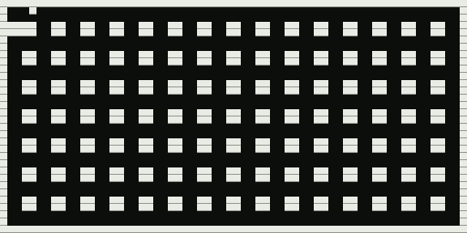

Mine Field Small
Graeme V. Samways · DREAMER no. 2 (1980-10) p. 11 1K RAM

The same game as Mine Field at half scale: a single-pixel cursor on a bigger grid with many more mines. Placing the mines takes a few seconds at the start. Reach the opposite corner with as few hits as possible.
Keys
5 up, 8 left, A right, D down.
Files
| File | Version | Load | Run |
|---|---|---|---|
| Mine Field Small.c8 | main | 0200-037F | C000 |
Listing as transcribed (with notes): mine_field_small.txt
Source
DREAMER no. 2 on archive.org, p. 11 (PDF page 11). Author: Graeme V. Samways.
Corrections applied
- 0256 9E40 -> 9348 (erratum in issue 3, B. Ritter; CHIPOS ignores the low nibble of 9XYN, so it works like 9340 in Mine Field).
Open doubts
- 0286 is struck through by hand on the scan; read as 3C05 like the other key tests and like Mine Field.
- The article says 100 mines, the code places 50.